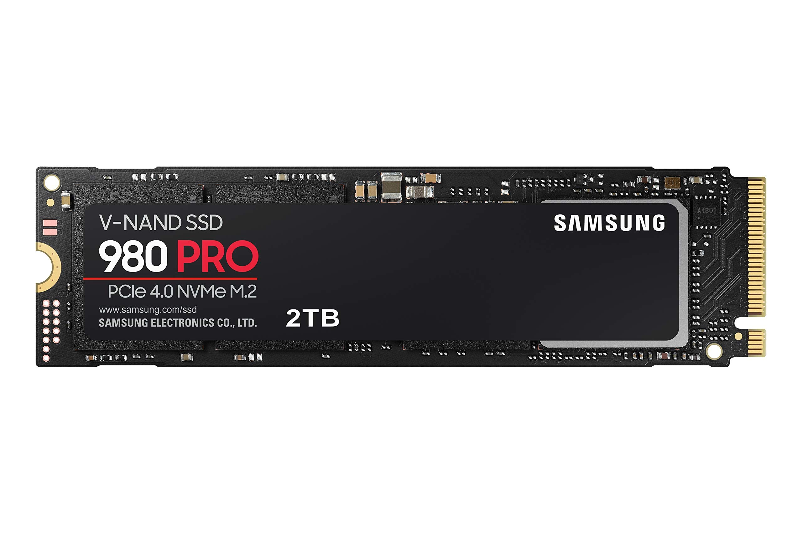
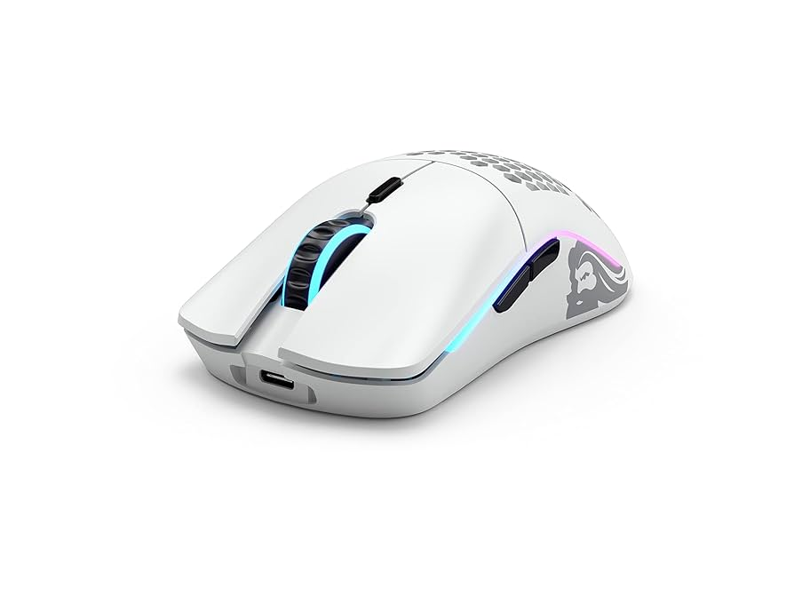
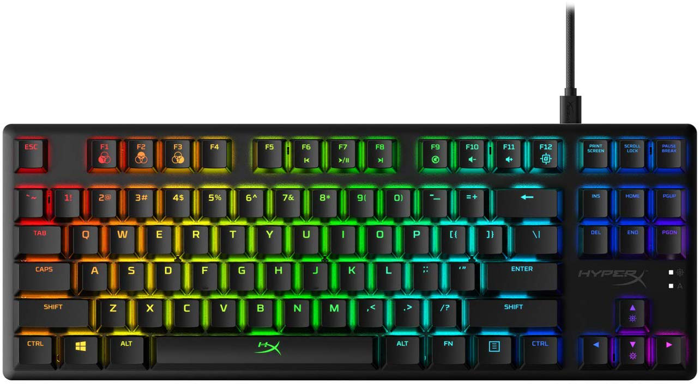

Blog
Novedades de la tienda
El SSD M.2 980 PRO de Samsung ofrece un rendimiento excepcional para gamers y profesionales. Puede alcanzar hasta velocidades de lectura hasta 7.000 MB/s y ofrece un almacenamiento de 2TB.

Datos curiosos
El Glorious Model O Inalambrico puede alcanzar hasta 25.000 DPI y una carga de bateria al 100% puede durar aproximadamente 71 horas con el RGB apagado.

El teclado HyperX Alloy Core RGB puede resistir hasta 120 ml de líquido, lo cual lo hace muy resistente.
